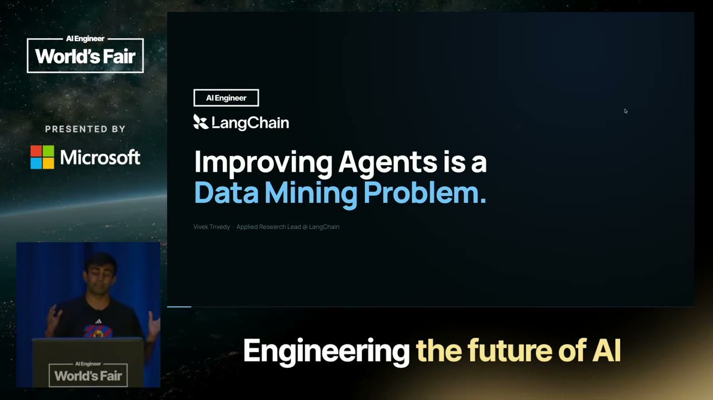
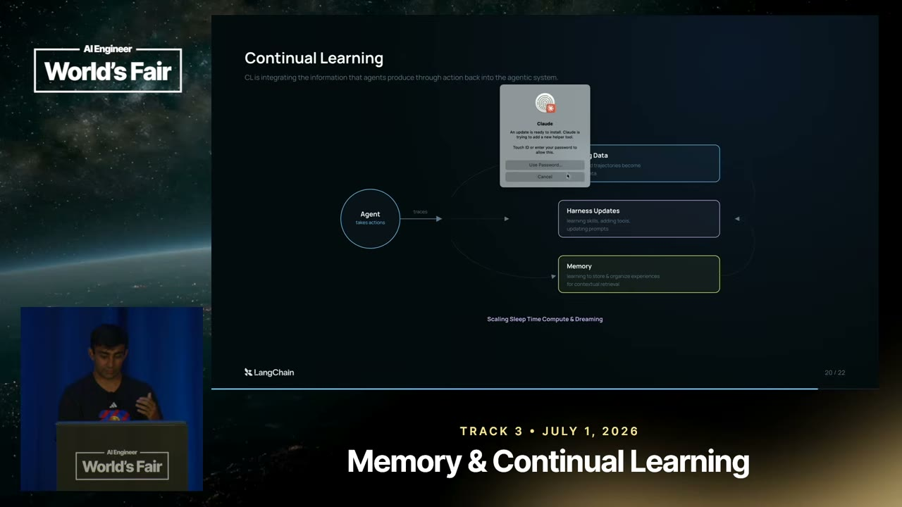

Trivedy frames continuous agent improvement as a four-step loop: ship the agent so it operates in real environments, collect the resulting trace data (tool calls, outputs, API calls) at scale, data-mine that trace data, and then run data-driven experiments to check whether a proposed change (new prompt, tool, orchestration) actually improves behavior against prior traces.
“the first step in building a successful agent is shipping it. So, if you put it out into the real world, then it can operate in environments”
▶ watch at 01:00
Unlike code, agent behavior (prompts, tools, skills, hooks, middleware, sub-agent orchestration) is hard for humans to reason about directly, and a prompt change behaves differently across domains. Trivedy notes reading traces at scale is expensive at the token level, and that very long agent interactions (e.g. from Claude Code or Codex) don't fit in another agent's context window at all, so traces increasingly have to be treated as external, queryable objects rather than something you dump into context.
“reading traces at scale is super expensive, uh especially if you have millions of traces and if you have millions of tokens per trace”
▶ watch at 06:14Working with Harvey on a legal benchmark, LangChain's team asked whether an open, cheaper model could match Opus's capability for judging traces. The answer, achieved through harness engineering informed by reading the traces themselves, was roughly yes at one to two orders of magnitude lower cost. For high-inference workloads, Trivedy also notes some teams find it cheaper to move off per-token pricing entirely and run a dedicated cluster instead.
“can I match the trace judging capability of Opus with an open cheaper model? And the answer is roughly yes at like an order or like two orders of magnitude cheaper”
▶ watch at 08:19“for like very high inference workloads, we find it to be way cheaper just to like run a cluster and I get like unlimited inference on that cluster”
▶ watch at 09:51Trivedy's recommended sequence is harness engineering first, because it gives feedback in roughly two minutes; once a team hits the ceiling of what prompt tweaking can achieve, fine-tuning on narrow, domain-specific tasks can push past frontier performance for that narrow task; after that, more harness engineering on top of the fine-tuned model. Looking ahead, he argues continual learning for agents needs to operate across training data collection, harness updates, and memory together.
“try harness engineering, try to do fine-tuning to sort of like break through that ceiling, and then do more harness engineering again if you need to”
▶ watch at 16:32“the amount of data that humans have produced in our entire lifetime will soon be eclipsed by agents running on like year scales and then 6-month scales and 3-month scales and then maybe every day”
▶ watch at 06:14“we think that you're going to have to do it across all three axes, which is one, collect a bunch of training data, which is like observational data from agents taking actions”
▶ watch at 17:33
The claim that a narrow, fine-tuned open model can beat frontier judge accuracy at a fraction of the cost is only demonstrated for one client's legal-domain benchmark in the talk; it's presented as a pattern LangChain expects to generalize, not as a general result. (ours)
| Stance | Claim | t |
|---|---|---|
| recommends | The recipe for improving agents starts with shipping so the agent operates in real environments, generating the trace data needed to improve it. | 01:00 |
| predicts | The volume of data humans have produced across their entire lifetimes will soon be eclipsed by agent-generated data on progressively shorter time scales: yearly, then every 6 months, then every 3 months, then daily. | 06:14 |
| asserts | An open, cheaper model can match Opus's trace-judging capability at roughly one to two orders of magnitude lower cost, achieved via harness engineering informed by the traces. | 08:19 |
| recommends | Teams should try harness engineering first, then fine-tuning to break through the harness ceiling, then return to more harness engineering afterward. | 16:32 |
| warns | Reading traces at scale is expensive at the input-token level, especially with millions of traces each holding millions of tokens. | 06:14 |
| recommends | For very high inference workloads, running a dedicated cluster can be cheaper than paying per-token, since it removes the token cost calculation entirely. | 09:51 |
| predicts | Continual learning for agents will need to operate across three axes together: collecting training data from agent actions, updating the harness, and updating memory. | 17:33 |
Machine-readable copy embedded in this page (script#ontology) and in the corpus ontology.